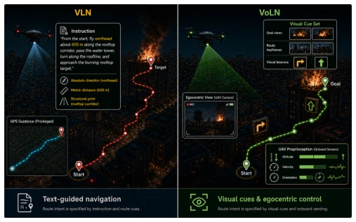
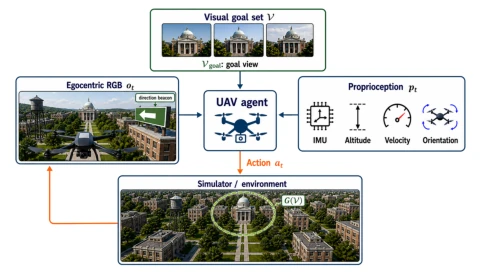
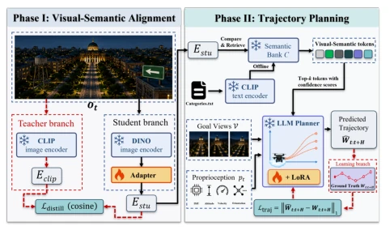
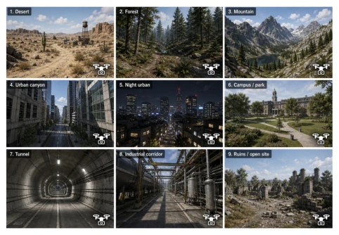
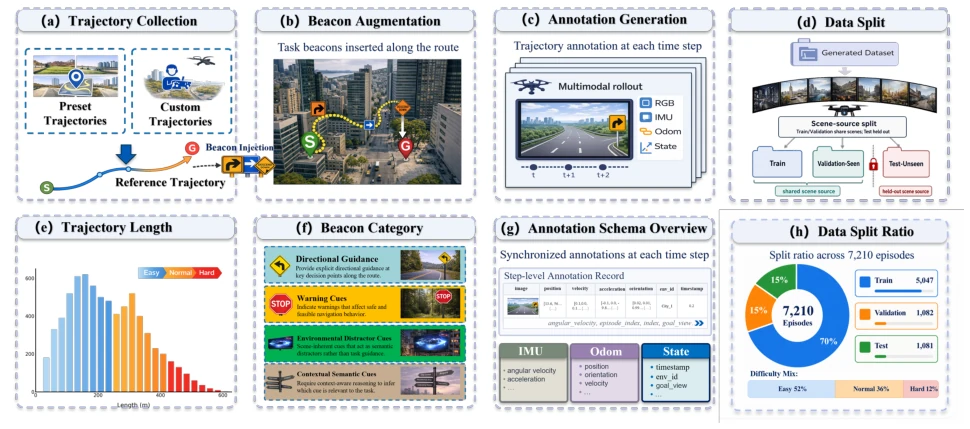
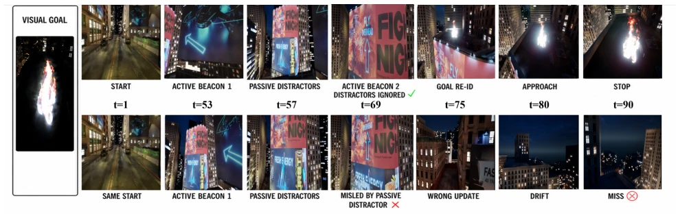
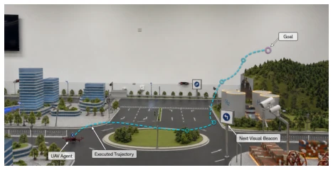

This paper proposes a 'self-imposed hardship' navigation paradigm, VoLN. It strips away the easiest language instructions and global navigation signals in VLN, leaving only a few destination photos, allowing drones to find their way on their own in open spaces without GPS or maps. This is indeed quite challenging, but it also exposes the shortcomings of current large models in long-horizon evidence integration. Although VoLN-MLLM significantly outperforms baselines on all metrics, the success rate on Test-Unseen is only 7.4% at best, and a dismal 1.8% under Hard difficulty. This is like asking blind men to touch an elephant, still relying on guessing. The benchmark is quite solid, with over 7000 trajectories covering various scenarios such as deserts and cities, but the method is more like a 'working Demo', still a vast distance from practicality. The authors honestly admit the challenges of long-horizon loop stability, which is much more substantial than papers that game the leaderboard to 90%.
研究动机Motivation
现有 VLN 任务（如 AerialVLN, OpenUAV）依赖自然语言指令，这些指令往往隐含了空间先验（如方位、距离），这在真实部署的无 GPS 环境中是无法获取的。这导致性能评估混淆了视觉感知和语言理解。VoLN 旨在解决这一问题，移除外部任务级路线指令和全局导航信号。现有工作如 Liu et al. (2023) 的 AerialVLN 仍提供语言指令，Lou et al. (2023) 的 Air-M 虽关注仿真但缺乏纯视觉长视野基准。VoLN 要求智能体仅通过局部可观测线索（如信标）在线推断路线信息，这对跨视角目标匹配和闭环稳定性提出了更高要求。
Existing VLN tasks (e.g., AerialVLN, OpenUAV) rely on natural language instructions, which often imply spatial priors (e.g., direction, distance), which are unavailable in real-world deployed GPS-less environments. This leads to performance evaluation confounding visual perception and language understanding. VoLN aims to solve this problem by removing external task-level route instructions and global navigation signals. Existing work such as Liu et al. (2023)'s AerialVLN still provides language instructions, while Lou et al. (2023)'s Air-M focuses on simulation but lacks a pure visual long-horizon benchmark. VoLN requires agents to infer route information online solely through locally observable clues (e.g., beacons), which imposes higher requirements on cross-view target matching and loop stability.

Figure 1: The instruction-based setting exposes route-level information through language and global guidance, whereas VoLN specifies the destination visually and presents route- relevant cues within the observable scene.
VoLN-MLLM adopts a two-stage visual-semantic planning framework. The first stage performs visual-semantic alignment, using a frozen DINOv3 ViT-B16 backbone to extract features, mapping them to the CLIP image embedding space via a lightweight adapter, achieving compatibility between self-supervised visual features and structured semantic space. The second stage is trajectory decoding, utilizing a pre-trained Vicuna-7B language model as a planner to jointly encode historical observations, target views, proprioception, and retrieved visual-semantic tokens. The planner is fine-tuned via LoRA, outputting a short-horizon waypoint sequence and stop decision. The entire process runs in a closed loop, where a low-level controller tracks waypoints, and the model replans based on new observations. Loss functions include trajectory L1 loss and stop BCE loss. The semantic library is built offline, with no external instructions during inference.

Figure 2: The VoLN interaction. The policy maps goal views V, observations ot, and proprioception pt to closed-loop actions at; G(V) serves only for evaluation.

Figure 5: VoLN-MLLM overview. Phase I learns visual– semantic alignment; Phase II predicts short-horizon way- points and stopping decisions. Dashed arrows indicate training branch; the stopping head is omitted for clarity.
A VoLN-UAV benchmark is constructed, containing 17 environments and 7210 trajectories, divided into Easy/Normal/Hard difficulties. On Test-Unseen, VoLN-MLLM's SR is 7.4% (Easy), 4.5% (Normal), 1.8% (Hard), outperforming baselines such as Seq2Seq-VG. Ablation studies show that removing visual-semantic alignment leads to a significant drop in SR, while LoRA adaptation can reduce the execution error rate. Physical testbed demonstrations verify the feasibility of the interface on real platforms. Despite leading metrics, the low success rate reveals the severe challenges of long-horizon navigation.

Figure 3: Representative VoLN-UAV environments.

Figure 4: Overview of VoLN-UAV. Panels (a)–(d) show trajectory collection, beacon augmentation, annotation generation, and scene-source splitting; panels (e)–(h) summarize trajectory length, beacon categories, annotation fields, and split statistics.

Figure 6: Successful and failed rollouts. Top: the trajectory passes the active-beacon locations and enters the goal region. Bottom: the trajectory diverges near the passive billboards and terminates outside the goal region.

Figure 7: Physical testbed and a representative VoLN rollout.